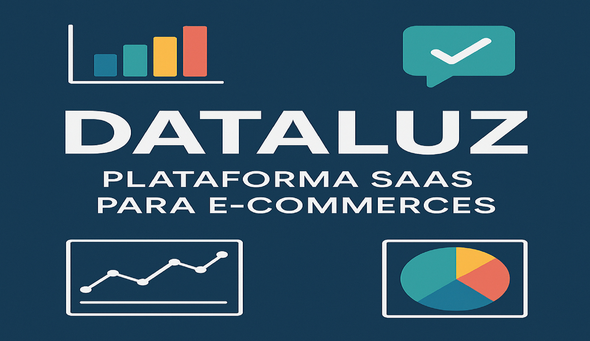

Corporate ERP Integrations & Maintenance (Fiação Itabaiana)
Complete maintenance of the Sankhya ERP in an industrial environment, including Java core
customizations, advanced modeling in Oracle 19c, and integration between fiscal,
financial, and industrial production modules.

SaaS Platform: Strategic Premium
Web product built with PHP/Laravel 11 and FilamentPHP for enterprise strategic management.
Multi-tenant architecture with database isolation, conversion of business spreadsheets
(OKRs, GUT Matrices, BSC) into a web system with granular access control.

Legacy Modernization: Strategic Enterprise
Complete requirements engineering and refactoring of a vulnerable legacy system.
Architecture restructuring, security flaw fixes, Git versioning implementation,
and development best practices adoption.

Warehouse Dashboard with Machine Learning
Intelligent system developed for predictive analysis and strategic management of industrial warehouses.
Uses advanced Machine Learning techniques to predict demands, detect anomalies,
and optimize maintenance processes. The dashboard offers an interactive interface with
Streamlit, supporting Excel and CSV files.
- Tools: Python, Streamlit, Scikit-learn, Prophet, Plotly, Pandas
- ML Models: Linear Regression, Random Forest, Gradient Boosting, Prophet (Meta)
- Features: 3-12 months forecasts, anomaly detection, criticality analysis, financial
control
- Highlight: NumPy 2.0+ patch, automatic data validation, chronologically ordered
interactive charts

DataLuz – SaaS Platform for E-commerce
I developed a fictional digital solution for small and medium-sized e-commerce businesses that struggle
with data analysis. DataLuz offers intuitive dashboards, automated WhatsApp alerts, and
customized reports. This project is part of the DS Community course and includes the full creation of a
digital business model using AARRR strategies.
- Tools: Product Strategy, AARRR Metrics, Customer Journey
- Problem: Lack of time and technical knowledge for BI
- Solution: API integration, automated reports, and simplified visualization
- Highlight: Insights sent directly to the entrepreneur's WhatsApp

Legal Data Simulation with Synthetic Data for Data Science
I created a realistic synthetic legal data generator, producing a complete dataset with 2,000 cases,
parties involved, and procedural movements. This solution is ideal to showcase skills in data analysis,
BI, and predictive modeling in a scenario that mirrors the real legal world.
- Tools: Python, Pandas, Faker
- Problem: Difficulty obtaining detailed legal data due to confidentiality
- Solution: A script that generates a robust, realistic dataset in .csv format, ready
for use in Power BI, Excel, or Python
- Highlight: Ability to simulate a complex environment including claim values, risk
provisions, legal stages, and responsible lawyers

Cohort Analysis – SuperStore
Using Excel, I developed a customer retention cohort analysis with real data from a national
supermarket chain. Through data cleaning and structuring, I identified the best acquisition groups and
behavior patterns, generating strategic insights for retention and sales.
- Tools: Excel, VLOOKUP, Pivot Tables, Conditional Formatting
- Result: May/2014 cohort had the highest retention after 6 months (11%)
- Key Insight: Promotional campaigns positively impact repurchase behavior

RFM Analysis – Customer Segmentation
I classified customers based on their purchasing behavior using the RFM technique (Recency,
Frequency, and Monetary). This analysis enables segmentation of the customer base to create
personalized campaigns and maximize marketing ROI.
- Tools: Excel (INDEX, MATCH, SUMIF, PERCENTILE)
- Segments Created: Champions, Loyal, Promising, Lost, and more
- Results: 40% of customers are potential loyal; only 1% in "Do Not Lose" group